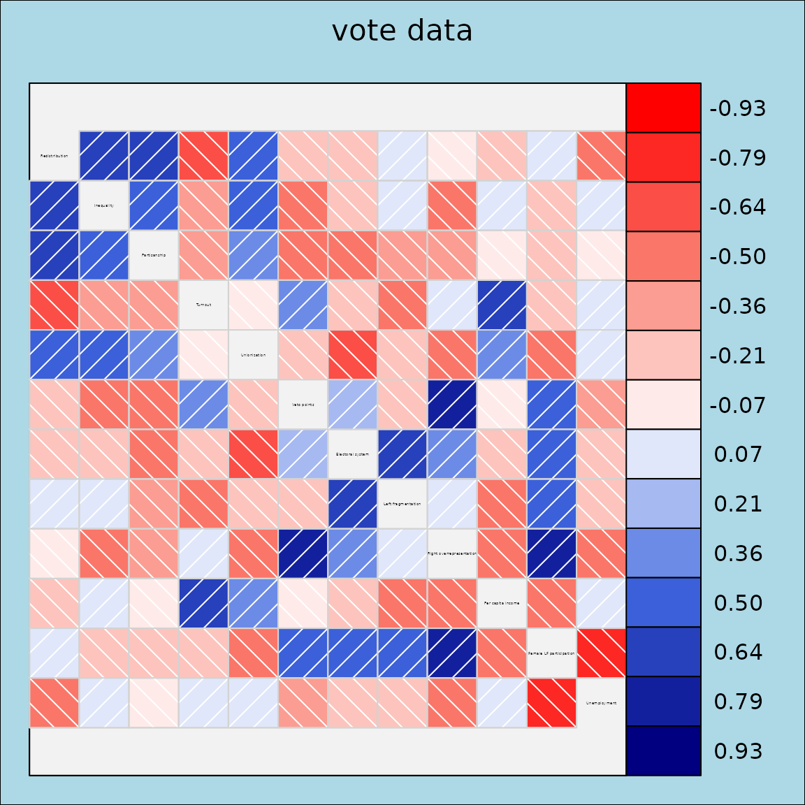
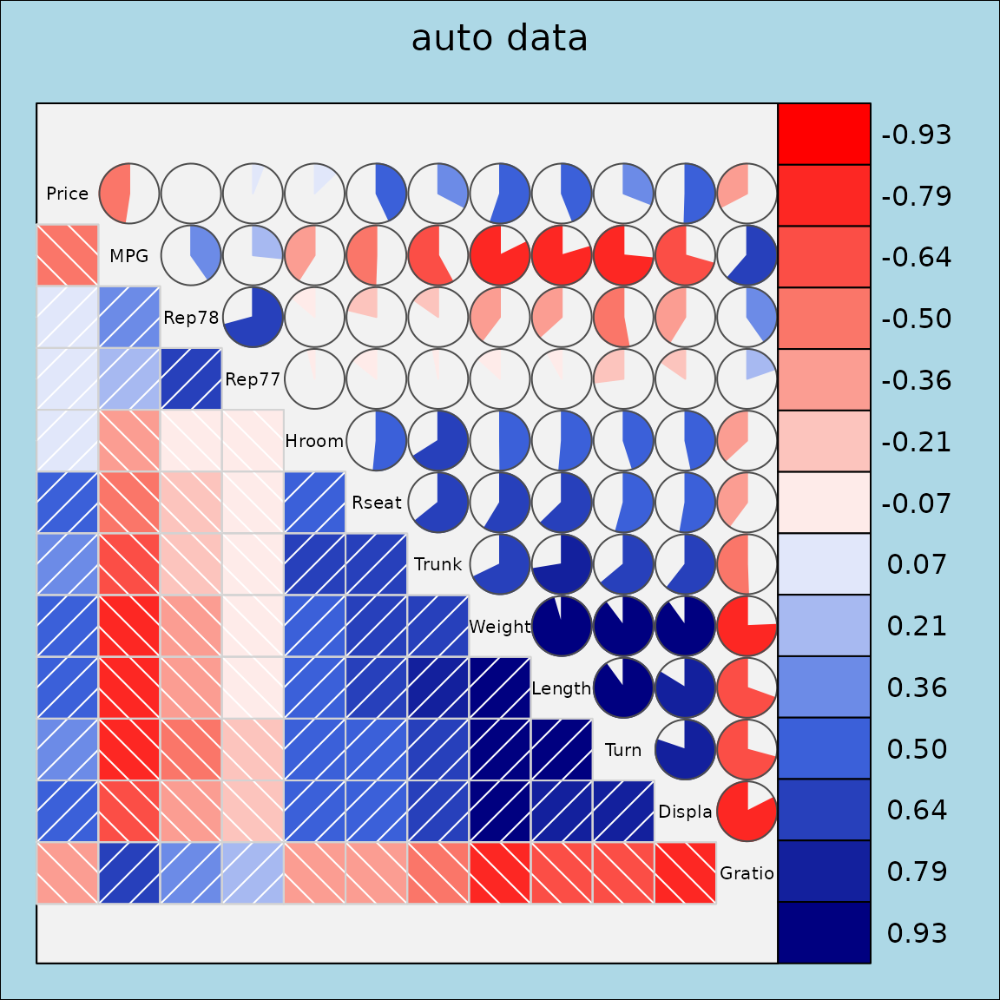

Package overview
The corrgram package provides functions for creating
corrgrams using three different graphics systems, base, grid, and
lattice.
Base R graphics + single function corrgram() for
dataframes or matrices. + Enables most features found in the paper by
@friendly2002corrgrams. - No automatic
legend. - Not easily combined with other graphics.
lattice graphics + Separate panel functions for
lattice::levelplot() for dataframes and
lattice::splom() for correlation matrices. + Enables
automatic legend. + Enables corrgrams conditioned on other variables. +
Can be combined with other lattice graphics for complex figures. - Not
feature complete compared to base R.
grid graphics + single function corrgram2()
for either dataframes or correlation matrices. + Enables automatic
legend. + Can be combined with other grid graphics for complex figures.
- Not feature complete compared to base R. + Faster than base R when
evaluated inside Positron.
This vignette
This vignette demonstrates how to create corrgrams using
grid graphics with the corrgram2() function
and a variety of panel functions for visualizing correlations in
different ways.
Grid Panels for corrgram2
This vignette demonstrates the use of grid-based panels in
corrgram2, which provide flexible and modern correlation
matrix visualizations.
Correlation matrix corrgram in grid
The vote dataset contains roll call voting records for
US Senators. Here we show a grid-based correlation plot with absolute
correlations, ordering, and a legend.
corrgram2(vote, abs = TRUE, order = TRUE, legend = TRUE, title = "vote data")
Dataframe corrgram in grid
The auto dataset contains various automobile attributes.
We select a subset of numeric variables and display a grid-based
correlation plot using the fill panel.
vars6 <- setdiff(colnames(auto), c("Model", "Origin"))
corrgram2(auto[, vars6],
lower.panel = grid_panel.shade, upper.panel=grid_panel.pie,
title = "auto data", legend = TRUE)